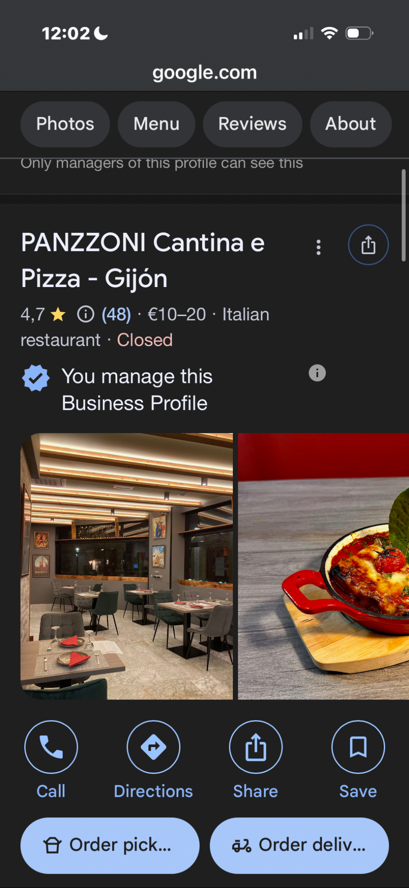

Panzzoni Gijón
Un espacio urbano, cálido y reconocible, con pizzas napolitanas al horno de leña, carta italiana y opción de pedido online.
Panzzoni nace para traer a la mesa una cocina italiana auténtica: masa madre de larga fermentación, horno de leña y producto italiano de alta calidad. La marca busca transmitir una voz cálida, cercana y profundamente italiana.
Panzzoni está pensada para transmitir tradición italiana, elegancia y cercanía. La experiencia gira alrededor del horno, la fermentación lenta y una carta construida con ingredientes italianos seleccionados.
La marca trabaja con terracota, oliva, rojo teja, negro hierro y crema base para proyectar artesanía, sobriedad y calidez.
Incluyo dentro del ZIP los PDFs del menú y del manual de identidad para que también puedas enlazarlos o conservarlos.
Desde aquí el cliente puede entrar en Gijón o Los Tilos, abrir Instagram, llamar, consultar ubicación o descargar la carta.
Un espacio urbano, cálido y reconocible, con pizzas napolitanas al horno de leña, carta italiana y opción de pedido online.

La propuesta Panzzoni en Los Tilos, conectada con Hotel Pathos, con cocina italiana genuina y una carta pensada para compartir.
He dejado una selección visual potente para que la home ya transmita producto y abra apetito.


El ZIP incluye HTML, CSS, JavaScript, imágenes, PDFs del menú, enlaces a Instagram, mapas, teléfonos y páginas separadas para cada establecimiento.